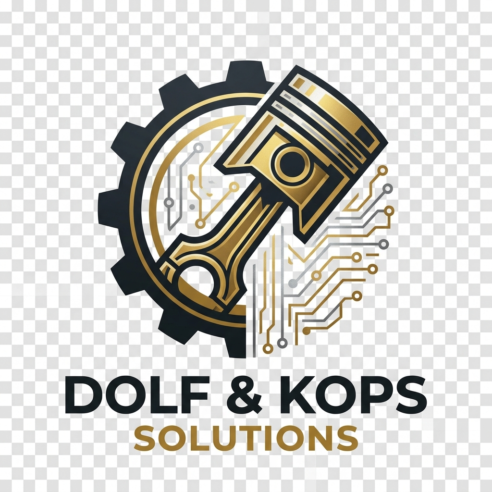

TECHNICAL STACK & FEATURES
Prepared by DOLF & KOPS Solutions
Underlying Architecture & Business Logic — April 2026
This document outlines the underlying technology and advanced feature set that powers the The Peoples Autonomous
Butchery ecosystem.
1. Technical Stack
The platform is designed for high reliability and local-first data integrity.
- Frontend: Vanilla HTML5, CSS3, and JavaScript (ES6+).
- Styling: Premium custom CSS with a focus on dark-mode aesthetics and glassmorphism.
- Data Layer: Local-First localStorage architecture with AI-ready JSON schemas.
- Analytics Engine: Chart.js for real-time Business Intelligence (BI)
rendering.
- AI Logic: Custom-built Autonomous Engine for order state-machine
management and stock prediction.
2. Core Business Features
⚖️ Precision Inventory (kg)
Unlike standard e-commerce systems that track "units," the The Peoples system tracks raw inventory in
kilograms (kg).
- Auto-Deduction: The system deducts the exact meat weight from stock whenever a "Cooked
Meal" or "Raw Cut" is sold.
- Stock Depletion AI: Predicts the exact number of days remaining for each product cut based
on rolling sales averages.
📍 AI Geofencing & Logistics
- Geocoding Integration: Calculates delivery fees dynamically based on the customer's precise
geolocation.
- Autonomous Dispatch: The AI Agent automatically assigns orders to the 2-stroke
delivery fleet once packaging is complete.
- Order Tracking: Customers can see the exact status (Braai, Packaging, Dispatched) in
real-time.
💳 Financial & Loyalty Core
- Credit-Based Transactions: Secure REF-based account funding to minimize payment friction.
- Loyalty Points: Automated point accumulation (R100 = 10 pts) and one-click redemption.
- Referral Engine: Incentivized community growth via unique referral links linked to the
loyalty system.
3. Community Sponsorship Hub
- Integration: A public-facing sponsorship application portal.
- AI Triage: Incoming requests are automatically categorized by the AI for management review.
- Giving Fund: Automated tracking of the 1% revenue pledge for local East Lynne initiatives.
DOLF & KOPS Solutions: Engineering
Advanced Local Commerce.